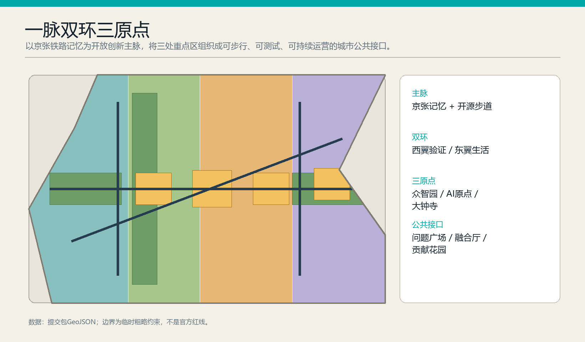
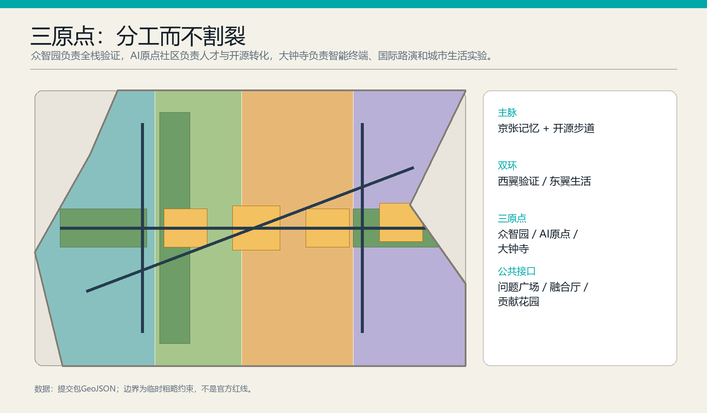
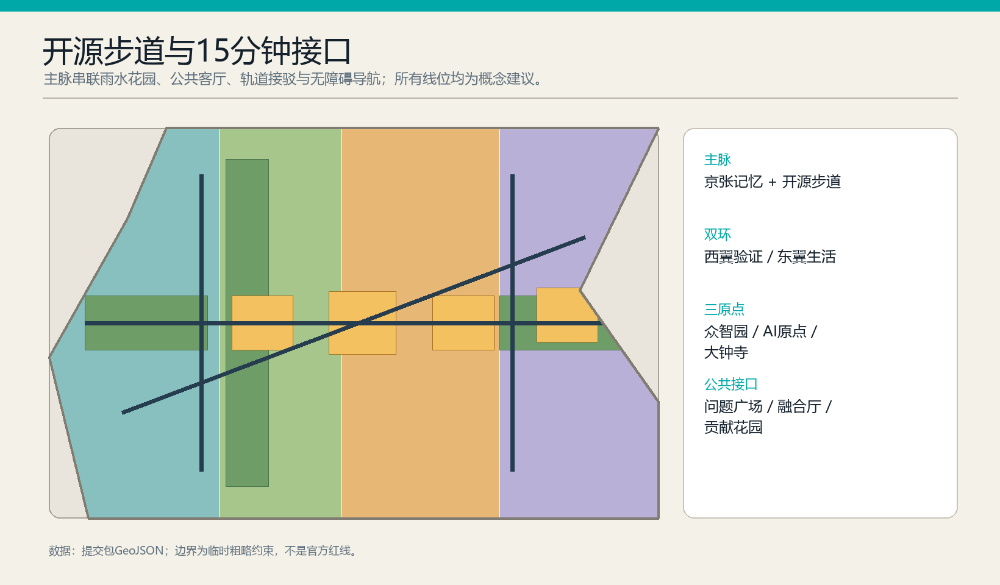

京张开源智脉
ONE SPINE · TWO LOOPS · THREE ORIGINS
临时粗略边界，仅用于概念讨论；不是官方红线。
????
????
????
????
????
??????
??
????
AI ??
????
????
????
??
??
总览地图
三层范围
重点区域
用地分区
交通慢行
蓝绿公共空间
建筑
更新项目
AI 场景
核心指标
任务覆盖
自检状态
来源
假设
一脉
Rail-memory Open Walk
双环
Validation + civic-life loops
三原点
Zhongzhiyuan · AI Origin · Dazhongsi
12 / 4
Scenario cards / validation scenarios

11.41 km²
12.5% green
6.6% public space

